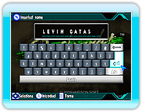

9 |
Inizio del gioco |
 |
|
Alla schermata del Titolo premi

Se giochi per la prima volta, la schermata seguente ti chiederà se vuoi inserire il nome del giocatore che verrà poi usato nel gioco.
I nomi possono essere lunghi fino a 13 caratteri (non sarà possibile usare nomi contenenti linguaggi inappropriati). Dopo avere confremato il tuo nome del giocatore, imposta la tua nazione di residenza sulla schermata della selezione della nazione.
Apparirà la schermata di selezione del gioco. Scegli una modalità col puntatore e conferma con
La console Wii deve essere collegata ad un network per poterti divertire con la Nintendo Wi-Fi Connection. Se esistono dei dati salvati in precedenza, dopo aver selezionato "modalità Storia", puoi scegliere tra "Nuova partita" e "Continua". Se scegli "Nuova partita", inizierai una nuova partita, mentre se scegli "Continua", continuerai la partita precedente. |
 |
 |
 |